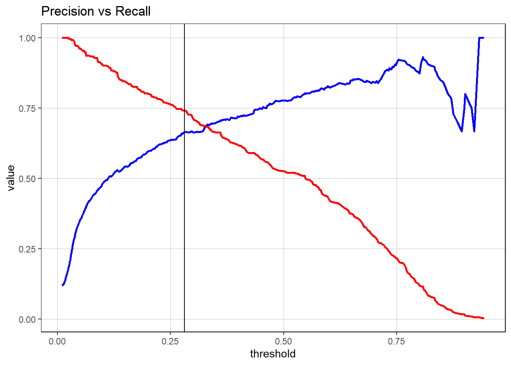

04 Performance Measures
2022-12-06
library(h2o)
library(tidyverse)
library(readxl)
library(rsample)
library(recipes)
product_backorders_tbl <- read_csv("C:/Users/ANISH SUNDAR/OneDrive/Documents/GitHub/bdml-anishsundargowthaman/data/Business Decisions with Machine Learning/product_backorders.csv")
product_backorders_tbl <- product_backorders_tbl %>%
mutate_if(is.character, as.factor)
set.seed(seed = 1113)
split_obj <- rsample::initial_split(product_backorders_tbl, prop = 0.85)
train_readable_tbl <- training(split_obj)
test_readable_tbl <- testing(split_obj)
recipe_obj <- recipe(went_on_backorder ~., data = train_readable_tbl) %>%
step_zv(all_predictors()) %>%
prep()
train_tbl <- bake(recipe_obj, new_data = train_readable_tbl)
test_tbl <- bake(recipe_obj, new_data = test_readable_tbl)
# Modeling
h2o.init()## Connection successful!
##
## R is connected to the H2O cluster:
## H2O cluster uptime: 37 minutes 11 seconds
## H2O cluster timezone: Europe/Berlin
## H2O data parsing timezone: UTC
## H2O cluster version: 3.36.1.1
## H2O cluster version age: 1 month and 30 days
## H2O cluster name: ANISH SUNDAR
## H2O cluster total nodes: 1
## H2O cluster total memory: 1.41 GB
## H2O cluster total cores: 8
## H2O cluster allowed cores: 8
## H2O cluster healthy: TRUE
## H2O Connection ip: localhost
## H2O Connection port: 54321
## H2O Connection proxy: NA
## H2O Internal Security: FALSE
## R Version: R version 4.0.0 (2020-04-24)# Split data into a training and a validation data frame
# Setting the seed is just for reproducability
split_h2o <- h2o.splitFrame(as.h2o(train_tbl), ratios = c(0.85), seed = 1234)##
|
| | 0%
|
|======================================================================| 100%train_h2o <- split_h2o[[1]]
valid_h2o <- split_h2o[[2]]
test_h2o <- as.h2o(test_tbl)##
|
| | 0%
|
|======================================================================| 100%# Set the target and predictors
y <- "went_on_backorder"
x <- setdiff(names(train_h2o), y)
automl_models_h2o <- h2o.automl(
x = x,
y = y,
training_frame = train_h2o,
validation_frame = valid_h2o,
leaderboard_frame = test_h2o,
max_runtime_secs = 30,
nfolds = 5
)##
|
| | 0%
|
|== | 3%
## 10:26:27.471: User specified a validation frame with cross-validation still enabled. Please note that the models will still be validated using cross-validation only, the validation frame will be used to provide purely informative validation metrics on the trained models.
## 10:26:27.474: AutoML: XGBoost is not available; skipping it.
|
|======= | 10%
|
|============ | 17%
|
|================= | 24%
|
|====================== | 31%
|
|=========================== | 38%
|
|================================ | 45%
|
|===================================== | 53%
|
|========================================== | 60%
|
|=============================================== | 67%
|
|==================================================== | 74%
|
|========================================================= | 82%
|
|============================================================== | 89%
|
|=================================================================== | 96%
|
|======================================================================| 100%automl_models_h2o@leaderboard## model_id auc logloss
## 1 StackedEnsemble_AllModels_1_AutoML_6_20220613_102627 0.9491869 0.1754298
## 2 GBM_4_AutoML_6_20220613_102627 0.9486729 0.1845026
## 3 StackedEnsemble_BestOfFamily_2_AutoML_6_20220613_102627 0.9484596 0.1770822
## 4 GBM_1_AutoML_6_20220613_102627 0.9454566 0.1797174
## 5 StackedEnsemble_BestOfFamily_1_AutoML_6_20220613_102627 0.9453953 0.1798228
## 6 GBM_3_AutoML_6_20220613_102627 0.9451866 0.1894443
## aucpr mean_per_class_error rmse mse
## 1 0.7490365 0.1632023 0.2297463 0.05278335
## 2 0.7304707 0.1717857 0.2335600 0.05455028
## 3 0.7391730 0.1509315 0.2304456 0.05310515
## 4 0.7374970 0.1610296 0.2317330 0.05370018
## 5 0.7381650 0.1719846 0.2318589 0.05375856
## 6 0.7225509 0.1546340 0.2358555 0.05562784
##
## [9 rows x 7 columns]# Visualize the H2O leaderboard to help with model selection
data_transformed_tbl <- automl_models_h2o@leaderboard %>%
as_tibble() %>%
select(-c(aucpr, mean_per_class_error, rmse, mse)) %>%
mutate(model_type = str_extract(model_id, "[^_]+")) %>%
slice(1:15) %>%
rownames_to_column(var = "rowname") %>%
# Visually this step will not change anything
# It reorders the factors under the hood
mutate(
model_id = as_factor(model_id) %>% reorder(auc),
model_type = as.factor(model_type)
) %>%
pivot_longer(cols = -c(model_id, model_type, rowname),
names_to = "key",
values_to = "value",
names_transform = list(key = forcats::fct_inorder)
) %>%
mutate(model_id = paste0(rowname, ". ", model_id) %>% as_factor() %>% fct_rev())
data_transformed_tbl %>%
ggplot(aes(value, model_id, color = model_type)) +
geom_point(size = 3) +
geom_label(aes(label = round(value, 2), hjust = "inward")) +
# Facet to break out logloss and auc
facet_wrap(~ key, scales = "free_x") +
labs(title = "Leaderboard Metrics",
subtitle = paste0("Ordered by: ", "auc"),
y = "Model Postion, Model ID", x = "") +
theme(legend.position = "bottom")
deeplearning_grid_01 <- h2o.grid(
# See help page for available algos
algorithm = "deeplearning",
# I just use the same as the object
grid_id = "deeplearning_grid_01",
# The following is for ?h2o.deeplearning()
# predictor and response variables
x = x,
y = y,
# training and validation frame and crossfold validation
training_frame = train_h2o,
validation_frame = valid_h2o,
nfolds = 5,
# Hyperparamters: Use deeplearning_h2o@allparameters to see all
hyper_params = list(
# Use some combinations (the first one was the original)
hidden = list(c(10, 10, 10), c(50, 20, 10), c(20, 20, 20)),
epochs = c(10, 50, 100)
)
)##
|
| | 0%
|
|======================================================================| 100%grid <- h2o.getGrid(grid_id = "deeplearning_grid_01", sort_by = "auc", decreasing = TRUE)
deeplearning_grid_01_model_1 <- h2o.getModel(grid@model_ids[[1]])
deeplearning_grid_01_model_1 %>% h2o.auc(train = T, valid = T, xval = T)## train valid xval
## 0.9290629 0.9078089 0.9078893deeplearning_grid_01_model_1 %>%
h2o.performance(newdata = as.h2o(test_tbl))##
|
| | 0%
|
|======================================================================| 100%## H2OBinomialMetrics: deeplearning
##
## MSE: 0.07700822
## RMSE: 0.2775036
## LogLoss: 0.2778018
## Mean Per-Class Error: 0.2062554
## AUC: 0.9050179
## AUCPR: 0.5768549
## Gini: 0.8100359
##
## Confusion Matrix (vertical: actual; across: predicted) for F1-optimal threshold:
## No Yes Error Rate
## No 2332 182 0.072395 =182/2514
## Yes 117 227 0.340116 =117/344
## Totals 2449 409 0.104619 =299/2858
##
## Maximum Metrics: Maximum metrics at their respective thresholds
## metric threshold value idx
## 1 max f1 0.096399 0.602922 258
## 2 max f2 0.031869 0.698297 321
## 3 max f0point5 0.298365 0.634615 167
## 4 max accuracy 0.298365 0.911477 167
## 5 max precision 0.987729 1.000000 0
## 6 max recall 0.000021 1.000000 399
## 7 max specificity 0.987729 1.000000 0
## 8 max absolute_mcc 0.096399 0.545891 258
## 9 max min_per_class_accuracy 0.031019 0.837209 322
## 10 max mean_per_class_accuracy 0.031019 0.839249 322
## 11 max tns 0.987729 2514.000000 0
## 12 max fns 0.987729 343.000000 0
## 13 max fps 0.000021 2514.000000 399
## 14 max tps 0.000021 344.000000 399
## 15 max tnr 0.987729 1.000000 0
## 16 max fnr 0.987729 0.997093 0
## 17 max fpr 0.000021 1.000000 399
## 18 max tpr 0.000021 1.000000 399
##
## Gains/Lift Table: Extract with `h2o.gainsLift(<model>, <data>)` or `h2o.gainsLift(<model>, valid=<T/F>, xval=<T/F>)`theme_new <- theme(
legend.position = "bottom",
legend.key = element_blank(),
panel.background = element_rect(fill = "transparent"),
panel.border = element_rect(color = "black", fill = NA, size = 0.5),
panel.grid.major = element_line(color = "grey", size = 0.333)
)
extract_h2o_model_name_by_position <- function(h2o_leaderboard, n = 1, verbose = T) {
model_name <- h2o_leaderboard %>%
as.tibble() %>%
slice(n) %>%
pull(model_id)
if (verbose) message(model_name)
return(model_name)
}
extract_model <- automl_models_h2o@leaderboard %>%
extract_h2o_model_name_by_position(1)%>%
h2o.getModel()
performance_h2o <- h2o.performance(extract_model, newdata = as.h2o(test_tbl))##
|
| | 0%
|
|======================================================================| 100%performance_tbl <- performance_h2o %>%
h2o.metric() %>%
as.tibble()
performance_tbl %>%
filter(f1 == max(f1))performance_tbl %>%
ggplot(aes(x = threshold)) +
geom_line(aes(y = precision), color = "blue", size = 1) +
geom_line(aes(y = recall), color = "red", size = 1) +
# Insert line where precision and recall are harmonically optimized
geom_vline(xintercept = h2o.find_threshold_by_max_metric(performance_h2o, "f1")) +
labs(title = "Precision vs Recall", y = "value") +
theme_new
load_model_performance_metrics <- function(model_id, test_tbl) {
model_h2o <- h2o.getModel(model_id)
perf_h2o <- h2o.performance(model_h2o, newdata = as.h2o(test_tbl))
perf_h2o %>%
h2o.metric() %>%
as_tibble() %>%
mutate(auc = h2o.auc(perf_h2o)) %>%
select(tpr, fpr, auc)
}
leaderboard_tbl <- automl_models_h2o@leaderboard %>%
as_tibble() %>%
slice(1:3)
model_metrics_tbl <- leaderboard_tbl %>%
mutate(metrics = map(model_id, load_model_performance_metrics, test_tbl)) %>%
rename(AUC = auc) %>%
unnest(cols = metrics)##
|
| | 0%
|
|======================================================================| 100%
##
|
| | 0%
|
|======================================================================| 100%
##
|
| | 0%
|
|======================================================================| 100%model_metrics_tbl %>%
mutate(
auc = auc %>% as.character() %>% as_factor()
) %>%
ggplot(aes(fpr, tpr, color = model_id, linetype = auc)) +
geom_line(size = 1) +
# just for demonstration purposes
geom_abline(color = "red", linetype = "dotted") +
theme_new +
theme(
legend.direction = "vertical",
) +
labs(
title = "ROC Plot",
subtitle = "Performance of 3 Top Performing Models"
)
get_model_performance_metrics_recall_precision <- function(model_id, test_tbl) {
model_h2o <- h2o.getModel(model_id)
perf_h2o <- h2o.performance(model_h2o, newdata = as.h2o(test_tbl))
perf_h2o %>%
h2o.metric() %>%
as_tibble() %>%
mutate(auc = h2o.auc(perf_h2o)) %>%
select(tpr, fpr, auc, precision, recall)
}
model_metrics_pre_recall_tbl <- leaderboard_tbl %>%
mutate(metrics = map(model_id, get_model_performance_metrics_recall_precision, test_tbl)) %>%
rename(AUC = auc) %>%
unnest(cols = metrics)##
|
| | 0%
|
|======================================================================| 100%
##
|
| | 0%
|
|======================================================================| 100%
##
|
| | 0%
|
|======================================================================| 100%model_metrics_pre_recall_tbl %>%
mutate(
auc = auc %>% as.character() %>% as_factor()
) %>%
ggplot(aes(recall, precision, color = model_id, linetype = auc)) +
geom_line(size = 1) +
theme_new +
theme(
legend.direction = "vertical",
) +
labs(
title = "Precision vs Recall Plot",
subtitle = "Performance of 3 Top Performing Models"
)
performance_h2o <- h2o.performance(extract_model, newdata = as.h2o(test_tbl))##
|
| | 0%
|
|======================================================================| 100%gain_lift_tbl <- performance_h2o %>%
h2o.gainsLift() %>%
as.tibble()
gain_transformed_tbl <- gain_lift_tbl %>%
select(group, cumulative_data_fraction, cumulative_capture_rate, cumulative_lift) %>%
select(-contains("lift")) %>%
mutate(baseline = cumulative_data_fraction) %>%
rename(gain = cumulative_capture_rate) %>%
# prepare the data for the plotting (for the color and group aesthetics)
pivot_longer(cols = c(gain, baseline), values_to = "value", names_to = "key")
gain_transformed_tbl %>%
ggplot(aes(x = cumulative_data_fraction, y = value, color = key)) +
geom_line(size = 1.5) +
labs(
title = "Gain Chart",
x = "Cumulative Data Fraction",
y = "Gain"
) +
theme_new
lift_transformed_tbl <- gain_lift_tbl %>%
select(group, cumulative_data_fraction, cumulative_capture_rate, cumulative_lift) %>%
select(-contains("capture")) %>%
mutate(baseline = 1) %>%
rename(lift = cumulative_lift) %>%
pivot_longer(cols = c(lift, baseline), values_to = "value", names_to = "key")
lift_transformed_tbl %>%
ggplot(aes(x = cumulative_data_fraction, y = value, color = key)) +
geom_line(size = 1.5) +
labs(
title = "Lift Chart",
x = "Cumulative Data Fraction",
y = "Lift"
) +
theme_newlibrary(cowplot)
library(glue)
plot_h2o_performance <- function(h2o_leaderboard, newdata, order_by = c("auc", "logloss"),
max_models = 3, size = 1.5) {
# Inputs
leaderboard_tbl <- h2o_leaderboard %>%
as_tibble() %>%
slice(1:max_models)
newdata_tbl <- newdata %>%
as_tibble()
# Selecting the first, if nothing is provided
order_by <- tolower(order_by[[1]])
# Convert string stored in a variable to column name (symbol)
order_by_expr <- rlang::sym(order_by)
# Turn of the progress bars ( opposite h2o.show_progress())
h2o.no_progress()
# 1. Model metrics
get_model_performance_metrics <- function(model_id, test_tbl) {
model_h2o <- h2o.getModel(model_id)
perf_h2o <- h2o.performance(model_h2o, newdata = as.h2o(test_tbl))
perf_h2o %>%
h2o.metric() %>%
as.tibble() %>%
select(threshold, tpr, fpr, precision, recall)
}
model_metrics_tbl <- leaderboard_tbl %>%
mutate(metrics = map(model_id, get_model_performance_metrics, newdata_tbl)) %>%
unnest(cols = metrics) %>%
mutate(
model_id = as_factor(model_id) %>%
# programmatically reorder factors depending on order_by
fct_reorder(!! order_by_expr,
.desc = ifelse(order_by == "auc", TRUE, FALSE)),
auc = auc %>%
round(3) %>%
as.character() %>%
as_factor() %>%
fct_reorder(as.numeric(model_id)),
logloss = logloss %>%
round(4) %>%
as.character() %>%
as_factor() %>%
fct_reorder(as.numeric(model_id))
)
#1A. ROC Plot
p1 <- model_metrics_tbl %>%
ggplot(aes(fpr, tpr, color = model_id, linetype = !! order_by_expr)) +
geom_line(size = size) +
theme_new +
labs(title = "ROC", x = "FPR", y = "TPR") +
theme(legend.direction = "vertical")
#1B. Precision vs Recall
p2 <- model_metrics_tbl %>%
ggplot(aes(recall, precision, color = model_id, linetype = !! order_by_expr)) +
geom_line(size = size) +
theme_new +
labs(title = "Precision Vs Recall", x = "Recall", y = "Precision") +
theme(legend.position = "none")
# 2. Gain / Lift
get_gain_lift <- function(model_id, test_tbl) {
model_h2o <- h2o.getModel(model_id)
perf_h2o <- h2o.performance(model_h2o, newdata = as.h2o(test_tbl))
perf_h2o %>%
h2o.gainsLift() %>%
as.tibble() %>%
select(group, cumulative_data_fraction, cumulative_capture_rate, cumulative_lift)
}
gain_lift_tbl <- leaderboard_tbl %>%
mutate(metrics = map(model_id, get_gain_lift, newdata_tbl)) %>%
unnest(cols = metrics) %>%
mutate(
model_id = as_factor(model_id) %>%
fct_reorder(!! order_by_expr,
.desc = ifelse(order_by == "auc", TRUE, FALSE)),
auc = auc %>%
round(3) %>%
as.character() %>%
as_factor() %>%
fct_reorder(as.numeric(model_id)),
logloss = logloss %>%
round(4) %>%
as.character() %>%
as_factor() %>%
fct_reorder(as.numeric(model_id))
) %>%
rename(
gain = cumulative_capture_rate,
lift = cumulative_lift
)
# 2A. Gain Plot
p3 <- gain_lift_tbl %>%
ggplot(aes(cumulative_data_fraction, gain,
color = model_id, linetype = !! order_by_expr)) +
geom_line(size = size,) +
geom_segment(x = 0, y = 0, xend = 1, yend = 1,
color = "red", size = size, linetype = "dotted") +
theme_new +
expand_limits(x = c(0, 1), y = c(0, 1)) +
labs(title = "Gain",
x = "Cumulative Data Fraction", y = "Gain") +
theme(legend.position = "none")
# 2B. Lift Plot
p4 <- gain_lift_tbl %>%
ggplot(aes(cumulative_data_fraction, lift,
color = model_id, linetype = !! order_by_expr)) +
geom_line(size = size) +
geom_segment(x = 0, y = 1, xend = 1, yend = 1,
color = "red", size = size, linetype = "dotted") +
theme_new +
expand_limits(x = c(0, 1), y = c(0, 1)) +
labs(title = "Lift",
x = "Cumulative Data Fraction", y = "Lift") +
theme(legend.position = "none")
# Combine using cowplot
# cowplot::get_legend extracts a legend from a ggplot object
p_legend <- get_legend(p1)
# Remove legend from p1
p1 <- p1 + theme(legend.position = "none")
# cowplot::plt_grid() combines multiple ggplots into a single cowplot object
p <- cowplot::plot_grid(p1, p2, p3, p4, ncol = 2)
# cowplot::ggdraw() sets up a drawing layer
p_title <- ggdraw() +
# cowplot::draw_label() draws text on a ggdraw layer / ggplot object
draw_label("H2O Model Metrics", size = 18, fontface = "bold",
color = "#2C3E50")
p_subtitle <- ggdraw() +
draw_label(glue("Ordered by {toupper(order_by)}"), size = 10,
color = "#2C3E50")
# Combine everything
ret <- plot_grid(p_title, p_subtitle, p, p_legend,
# Adjust the relative spacing, so that the legends always fits
ncol = 1, rel_heights = c(0.05, 0.05, 1, 0.05 * max_models))
h2o.show_progress()
return(ret)
}
automl_models_h2o@leaderboard %>%
plot_h2o_performance(newdata = test_tbl, order_by = "auc",
size = 0.5, max_models = 3)